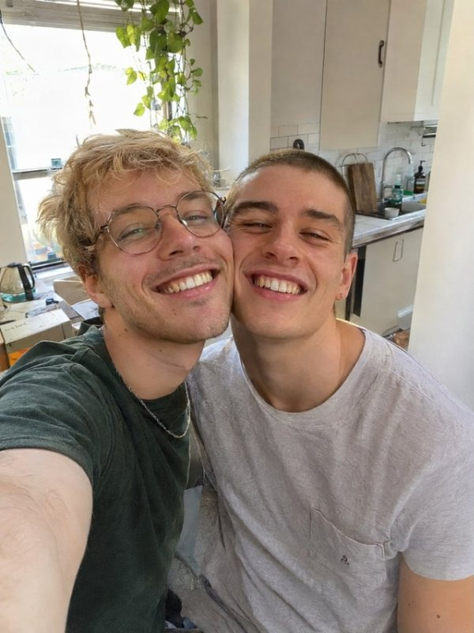
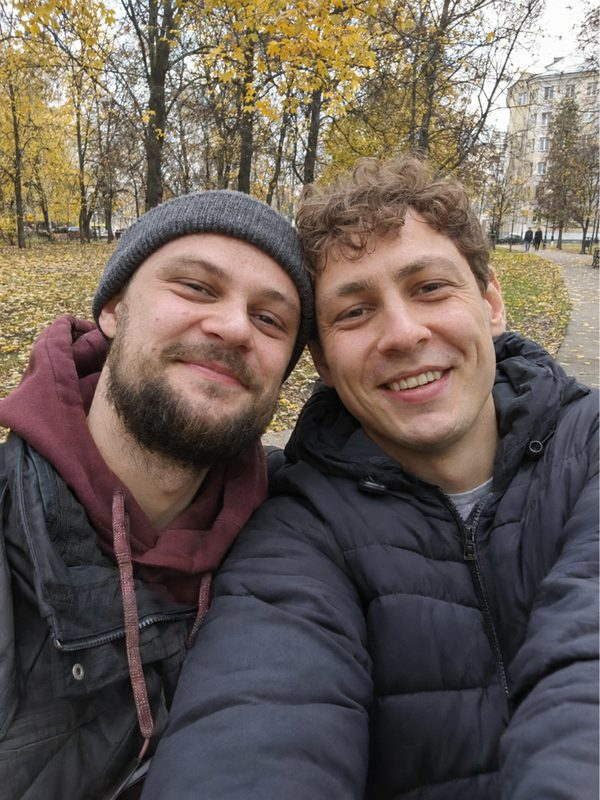
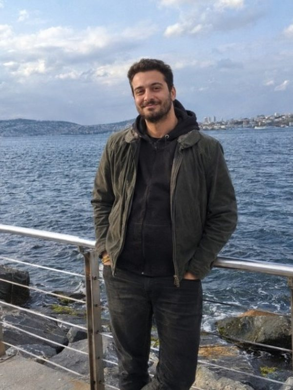
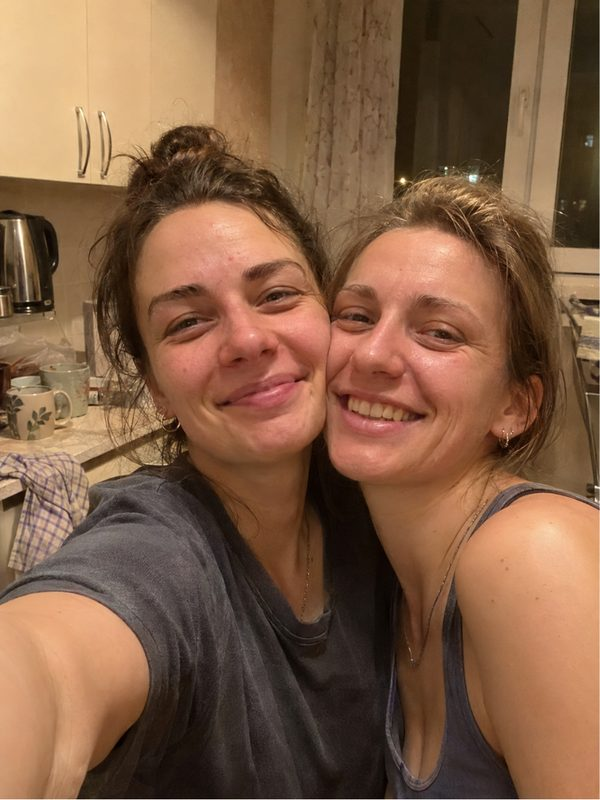

Анкета
На сайте или в боте @ASILOhelperBot: несколько вопросов о вашей ситуации. Подробности истории писать не нужно.
Начните с бесплатной оценки шансов: по анкете скажем, подходит ли вам защита, и ответим в течение суток. Дальше консультация под ваш вопрос, от 50 €.
На сайте или в боте @ASILOhelperBot: несколько вопросов о вашей ситуации. Подробности истории писать не нужно.
В течение суток Саша, координатор проекта, разберет анкету и честно скажет, подходит ли вам защита и что в вашей истории важно. Проценты не называем: решение принимает только Испания.
Выбираете формат ниже, оплачиваете в рублях, евро или USDT и созваниваетесь онлайн. После получаете материалы.
Есть вопросы, и хочется понять свой следующий шаг
Присылаете вопросы заранее. На созвоне разбираем вашу ситуацию и отвечаем и на новые вопросы, если появятся. После встречи присылаем конспект.
За 30 минут обычно успеваем ответить на несколько вопросов, а за час спокойно разобрать всю ситуацию и составить план. Задержались – доплатить можно после.
Только начинаете и хотите разобраться во всем процессе
Индивидуальная лекция юриста: плюсы и минусы защиты, маршрут и подача, план переезда, кейс и доказательства, интервью. В конце ваши вопросы. Можно прийти вдвоем.
Кейс уже написан, но вы в нем не уверены
Загружаете текст в Google Docs, юрист и координатор читают его заранее. На созвоне разбираем, что усилить и исправить, какие доказательства нужны и где их искать.
Скоро интервью в полиции
Два созвона. Первый – интервью как в Испании: вопросы, просьба рассказать историю, уточнения, иногда вас торопят. Второй – подробный разбор ответов. После – расшифровка, письменный разбор и материалы. Входит в большинство тарифов сопровождения.
Сумму за консультацию вычитаем из любой следующей нашей услуги. Оплата в рублях, евро или USDT.
Сам получил защиту в Испании зимой 2023/24. Оценка шансов и консультации по вашим вопросам.
Общие консультации, разбор кейсов и репетиция интервью.
Отвечает на заявки, записывает на консультации и составляет договор.
Одобрение не может гарантировать никто: решение принимают органы Испании. Если кто-то обещает 100 %, это повод насторожиться.
Юрист спокойно и грамотно объяснил все сложности и пути их решения. Стало понятно, а главное – не страшно. Спасибо, что не оставляете людей в одиночестве


Мы с парнем заранее написали кучу вопросов о переезде и беженстве и на все получили четкие ответы. А еще таблицы, памятки и полезные контакты
Первый созвон с координатором развеял главные сомнения, Валерия вела подачу на визу, юрист вычитал кейс. Визу дали с первого раза. Ценник абсолютно соотносим с пользой


На все наши вопросы были даны четкие, полные ответы. После консультации стало спокойнее и понятнее, что делать. С экспертом точно стоит посоветоваться, чтобы не ошибиться
Мы с партнером ехали в Барселону без четкого плана. Координатор ответил на все вопросы и остался на связи. Сейчас мы 8 месяцев в Испании, все хорошо


Одни кормили завтраками, другие просили нереальный ценник. Ребята оказались «целительной таблеткой»: успокоили и разложили все по полочкам
Советы помогли внести правки в кейс и сделать его весомее для миграционного офицера. Я подался на убежище неделю назад и теперь в стране легально


Два года не могла решиться. Координатор помог выбрать страну и тип легализации. Оказалось, все не так страшно, как я себе представляла
Очень информативно, много полезного, еще и материалы после консультации. Ответили на все вопросы, стало понятнее и спокойнее


Разобрали все подводные камни, которые могут быть на интервью, и получили ценные правки к кейсу. Общение было приятным и конструктивным
Все прошло очень комфортно. Получил ответы на все вопросы, и появилась уверенность и вера в то, что все может получиться :)


Мы с девушкой были в жутком стрессе из-за переезда. Координатор успокоил, поддержал и ответил на все-все вопросы. Теперь осталось только исполнить нашу мечту 🤍
Это реальные люди: отзывы пришли нам после консультаций, работы над кейсом и сопровождения.
Читать все отзывы →
Созваниваемся в Google Meet, по видео. К консультации по вашим вопросам пришлите вопросы заранее. К консультации по кейсу вам нужно будет загрузить кейс в Google Docs, чтобы мы изучили его и внесли комментарии. К общей консультации готовиться не нужно. На любую консультацию можно прийти вдвоем с партнером.
Консультации стоят от 50 €. Работа над кейсом начинается от 250 €. Стоимость сопровождения мы рассчитываем индивидуально, она зависит от набора услуг – тарифы с шенгенской визой и ситой стоят дороже, но при работе в паре мы предлагаем скидку до 20%.
Да, если у вас нет возможности нанять команду для сопровождения – вы можете воспользоваться нашими бесплатными материалами – телеграм-каналом, чатом и Базой знаний. Сотрудники и волонтеры обновляют ее каждый месяц, чтобы информация всегда была актуальной.
Весь путь реально пройти самостоятельно, но если не получается ответить на ваш вопрос – у нас есть консультация 50 €. Вы закроете основные вопросы и поймете, как двигаться дальше. Если потом вы решите взять сопровождение – сумму за консультацию вычтем из его стоимости.
Защиту дают не только тем, кого уже избили или задержали. Основанием бывает и обоснованный страх преследования в будущем – например, если людей вашей группы в стране преследуют за то же, что делаете вы. Учитываются дискриминационные законы, травля, отказ полиции помочь, психологическое состояние. Насколько это применимо к вам, подскажем при оценке ваших шансов. Это бесплатно.
Если мы посчитаем, что риск отказа слишком высокий – мы скажем это на бесплатной оценке шансов. Защиту дают, если причина переезда – угроза или страх, а не желание улучшить условия жизни.
Процесс подачи одинаковый для граждан любых стран. Мы помогаем людям из России и постсоветских стран, но шансы уверенно оцениваем только для граждан России. Для граждан других стран предлагаем начать с консультации: важно, где вы сейчас и какой у вас паспорт, от этого зависит маршрут.
Подаваться можно и находясь в Испании. Но если вы въехали по визе другой страны ЕС или уже подавались где-то еще, ваше заявление может рассматривать не Испания, а другая страна.
С 12 июня 2026 года это решается уже не по Дублинскому регламенту, а по новому Регламенту ЕС 2024/1351 (AMMR) из Пакта о миграции и убежище. Логика осталась прежней: чаще всего отвечает страна, которая выдала визу, или страна, где вы уже подавались. Вашу ситуацию стоит разобрать с юристом на консультации, вместе со всеми вашими поездками за границу после 2022 года.
Это самый волнительный этап, и к нему можно подготовиться. На интервью будет переводчик, можно говорить на русском. В большинстве тарифов сопровождения есть тренинг с юристом: интервью как в Испании, разбор ответов, расшифровка и письменный разбор. Отдельно его можно взять как репетицию интервью за 250 €.
Да, работаем по договору: в нем цена, этапы и что делать, если вы решите остановиться. Платить можно в рублях, евро или USDT. Работа над кейсом и сопровождение оплачиваются в два этапа. Обсудить детали и попросить шаблон договора можно у менеджера.
Не нашли ответ? Спросите в боте →
Расскажите, где вы сейчас и что вас интересует.
На бесплатной оценке шансов скажем, подходит ли
вам международная защита и с чего начать.
Общение с нами не нарушает законы РФ. Мы не передаем данные третьим лицам.